Source: AVEVA Application Server 2023 Training Manual, Module 12, Section 1 (pages 12-2 to 12-6)
Covers the Operations Control Management Console (OCMC), the Galaxy Database Manager, backing up a Galaxy (.cab file), restoring a Galaxy, and creating a new Galaxy from a backup file.
34.1 Module Objectives
Reference: Module 12, page 12-2
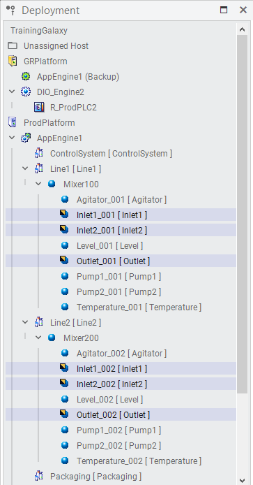
TrainingGalaxy deployment hierarchy — the tree shows GRPlatform, ProdPlatform, AppEngine1 with Line1 and Line2 production lines, each containing Mixer100/Mixer200 with Agitator, Inlet1, Inlet2, Level, Outlet, Pump1, Pump2, and Temperature devices (Module 12, page 12-2)
Upon completion of this lesson, you will be able to:
Use the System Management Console (OCMC) to access the Galaxy Database Manager
Back up a Galaxy to a .cab file
Restore a Galaxy from a backup file
Create a new Galaxy from a backup file
34.2 Operations Control Management Console (OCMC)
Reference: Module 12, Section 1 (page 12-3)
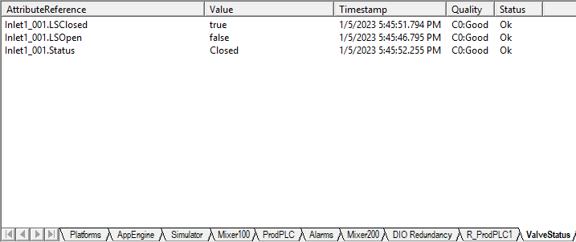
Device runtime status monitoring table showing Inlet1_001 with LSClosed=true, LSOpen=false, Status=Closed — illustrating the type of live data that flows through the Galaxy being backed up with timestamps, C0:Good quality, and Ok status in the SCADA monitoring interface (Module 12, page 12-3)
The Operations Control Management Console (OCMC) is used to help system integrators and system administrators perform administrative tasks and diagnostics on an application. Its console tree lists the items available for these tasks.
One of these items is the Galaxy Database Manager, used to back up and restore a Galaxy.
Key Concept: The OCMC is a separate application from the IDE. It is used after the Galaxy has been developed and deployed, when you need to perform administrative operations such as backup, restore, and database management.
34.3 Galaxy Database Manager — Overview
Reference: Module 12, Section 1 (pages 12-3 to 12-4)
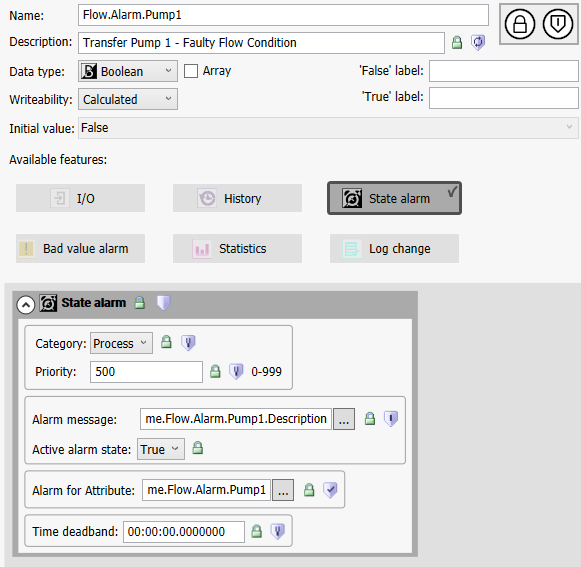
Flow.Alarm.Pump1 alarm configuration — Boolean tag with State alarm enabled, Process category, priority 500 — part of the alarm script configuration covered in earlier modules, alarm message linked to description, active alarm state set to True (Module 12, page 12-4)
The Galaxy Database Manager is the tool you use to back up and restore a Galaxy. The Galaxy Database Manager is automatically installed on every Galaxy Repository node.
How Backing Up Works
Backing up a Galaxy creates a single backup file (with .cab extension) containing all the files, configuration data, and object deployment states required to recreate the Galaxy in an empty Galaxy Repository.
⚠️ Critical Warning: During the backup, no write operations are allowed to the Galaxy Repository. If write activity is occurring, you must back up at a later time. Be sure to perform the backup operation when no database-write operations will occur.
How Restoring Works
Flow.Alarm.Pump2 alarm configuration — similar to Pump1, Boolean tag with State alarm for Transfer Pump 2 faulty flow condition with Process category and priority 500 (Module 12, page 12-4)
Restoring a Galaxy uses the backup file to either:
Overwrite an existing Galaxy
Create the backed-up Galaxy in a different Galaxy Repository
The restore process prompts you for confirmation before a Galaxy is overwritten. All objects should be undeployed before beginning to restore a Galaxy. During the restore, no clients can use the Galaxy Repository.
Tip: Be sure to back up your Galaxies regularly so that if a Galaxy becomes corrupted, you can restore it. You can choose a backup file to overwrite an existing, corrupted Galaxy or to reproduce a Galaxy in another Galaxy Repository.
34.4 Alarm Script Configuration
Reference: Module 12, Section 1 (pages 12-4 to 12-5)
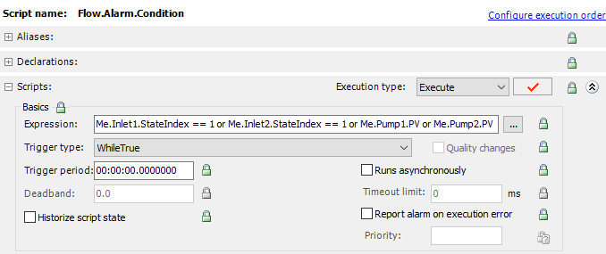
Flow.Alarm.Condition script configuration — uses WhileTrue trigger with expression checking if Inlet1.StateIndex == 1 or Inlet2.StateIndex == 1 or Pump1.PV or Pump2.PV to activate flow alarms (Module 12, page 12-4)
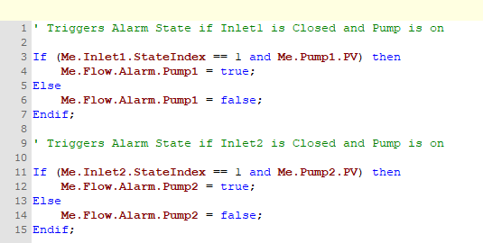
Flow alarm VBScript code — two logic blocks: (1) triggers Flow.Alarm.Pump1 if Inlet1 is closed and Pump1 is on, (2) triggers Flow.Alarm.Pump2 if Inlet2 is closed and Pump2 is on (Module 12, page 12-4)
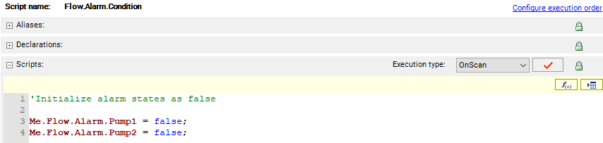
OnScan initialization script — runs each scan cycle to reset Flow.Alarm.Pump1 and Flow.Alarm.Pump2 to false before other logic evaluates alarm conditions (Module 12, page 12-4)
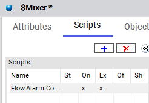
SMixer Scripts tab — shows Flow.Alarm.Co... script with On and Ex marks indicating it is active and executing (Module 12, page 12-4)
Mixer100 monitoring — all components in idle state: Inlet1/Inlet2 Closed, Pump1/Pump2 Stopped, Flow.Alarm.Pump1 and Flow.Alarm.Pump2 both false, all quality C0:Good (Module 12, page 12-4)
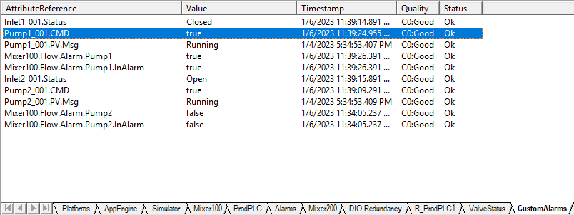
Mixer100 active state — Pump1 commanded ON and running with Flow.Alarm.Pump1 = true (alarm active), Inlet2 Open, Pump2 ON and running with no alarm. Shows alarm triggering when pump runs with closed inlet (Module 12, page 12-4)
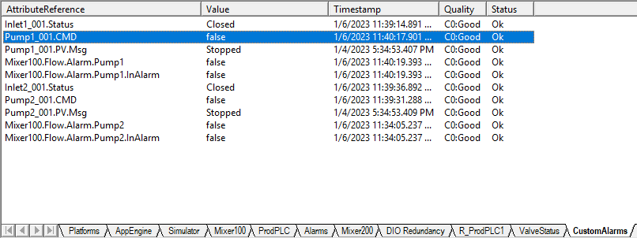
Mixer100 after alarm reset — both pumps commanded OFF and stopped, all flow alarms cleared to false, system returned to normal idle state (Module 12, page 12-4)
34.7 Averager Object — Templates
Reference: Module 12, Section 1 (page 12-5)
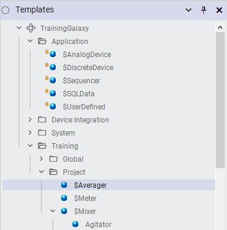
Templates panel — TrainingGalaxy project tree showing Application folder with $AnalogDevice, $DiscreteDevice, $Sequencer, $SQLData, $UserDefined, and Training/Project folder with $Averager (selected), $Meter, $Mixer, Agitator (Module 12, page 12-5)
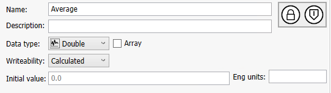
Average attribute configuration — Name: Average, Data type: Double, Writeability: Calculated, Initial value: 0.0, no engineering units assigned (Module 12, page 12-5)
34.8 Average.Calculate Script
Reference: Module 12, Section 1 (page 12-5)
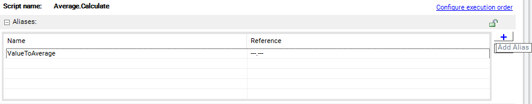
Average.Calculate script aliases — ValueToAverage alias maps to input data source for the averaging calculation (Module 12, page 12-5)
Average.Calculate script configuration — Periodic trigger type, Execute execution type, with options for quality changes, async runs, timeout, and error reporting (Module 12, page 12-5)
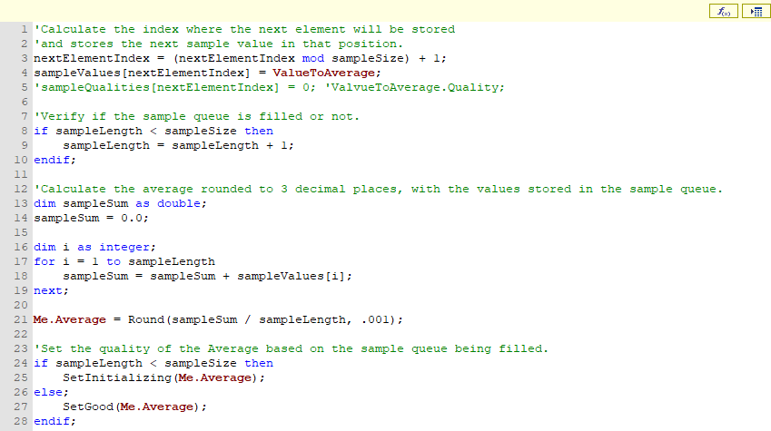
Average.Calculate VBScript code — implements circular buffer average: calculates nextElementIndex, stores new sample, sums all samples, rounds average to 3 decimal places, sets quality to Initializing until buffer is full then Good (Module 12, page 12-5)
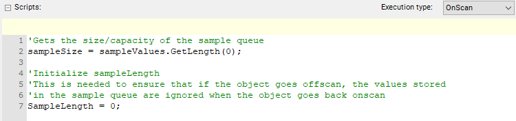
OnScan initialization script — gets sample queue size via GetLength(0) and resets SampleLength to 0 to clear stale data when object goes offscan and back onscan (Module 12, page 12-5)
34.9 Object Hierarchy and Tag Management
Reference: Module 12, Section 1 (page 12-5)
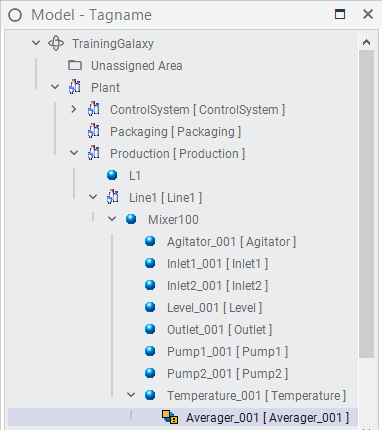
Model-Tagname tree — full hierarchy from TrainingGalaxy root through Plant, ControlSystem, Packaging, Production, Line1, Mixer100 with all field devices and Averager_001 (Module 12, page 12-5)
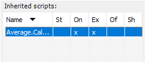
Inherited scripts panel — Average.Calculate script shown with On (Enabled) and Ex (Execute) status marks indicating active execution, while St (Status), Of (Off), and Sh (Shared) columns are empty (Module 12, page 12-5)
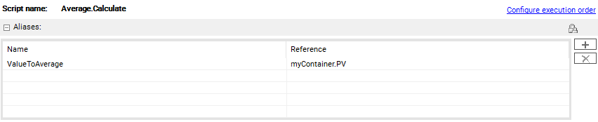
Average.Calculate aliases configuration — ValueToAverage alias mapped to myContainer.PV (Process Variable) for the averaging input source (Module 12, page 12-5)
Galaxy Browser — TrainingGalaxy namespace with 38 objects listed in left pane; right pane shows Temperature_001 attributes including PV (Float), PV.Deadband (Double), and PV.Description (String) (Module 12, page 12-5)
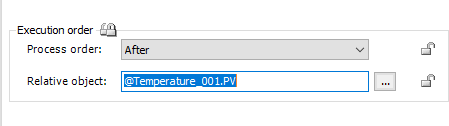
Execution order configuration — Process order set to After with GTemperature_001.PV as the relative object, defining sequential execution dependency (Module 12, page 12-5)
34.10 Average Value Monitoring
Reference: Module 12, Section 1 (page 12-5)
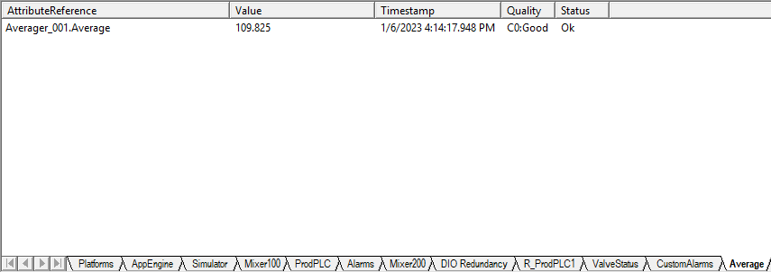
Averager_001.Average monitoring — showing calculated average value 109.825, timestamped 1/6/2023 4:14:17 PM, C0:Good quality, Ok status on the Average tab (Module 12, page 12-5)
34.11 Galaxy Backup and Restore — Section Overview
Reference: Module 12, Section 1 (pages 12-5 to 12-6)
Collaborative workspace — team of professionals working together on industrial automation systems, reflecting the collaborative nature of Galaxy database management and backup operations (Module 12, page 12-5)
The Operations Control Management Console is used to help system integrators and system administrators perform administrative tasks and diagnostics on an application. Its console tree lists the items available for these tasks. One of these items is the Galaxy Database Manager used to back up and restore a Galaxy.
This section briefly describes the OCMC and explains how to back up and restore operations using the Galaxy Database Manager. It includes a discussion on how to create a new Galaxy from a backup file.
34.12 Galaxy Backup and Restore — OCMC Interface
Reference: Module 12, Section 1 (page 12-3)
OCMC — Operations Control Management Console — left pane shows Historian, Galaxy Database Manager, Operations Integration Server Manager, Log Viewer, and Platform Manager. TrainingGalaxy listed under Galaxy Database Manager with OI.SIM.1 PLC_TEST node configured (Module 12, page 12-3)
34.13 Backing Up a Galaxy
Reference: Module 12, Section 1 (pages 12-4 to 12-5)
Follow these steps to back up a Galaxy:
Step 1: Open the OCMC and expand the Galaxy Database Manager node in the left navigation tree. Step 2: Right-click the Galaxy you want to back up (e.g., TrainingGalaxy) and select Backup from the context menu.
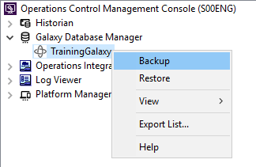
Right-click on TrainingGalaxy under the Galaxy Database Manager — the context menu shows Backup (highlighted), Restore, View, Export List, and Help options. Backup is selected (Module 12, page 12-4)
Step 3: A warning dialog appears. Read the warning carefully — it reminds you that no database-write operations are allowed during the backup. Click Yes to continue.
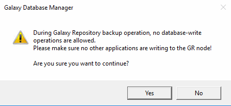
The Galaxy Database Manager warning dialog — it warns that no database-write operations are allowed during the backup operation and asks "Are you sure you want to continue?" Click Yes to proceed (Module 12, page 12-4)
Step 4: In the Save As dialog, choose a location and name for the backup file. The file will be saved with a .cab extension. Click Save.
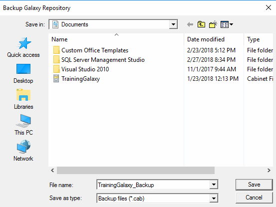
Backup Galaxy Repository Save As dialog — file type is Backup files (*.cab), file name entered as TrainingGalaxy_Backup, saved to Documents folder. Choose a safe location to store the backup (Module 12, page 12-5)
Step 5: The Galaxy Database Manager progress bar appears as the backup is created. Wait for the operation to complete.
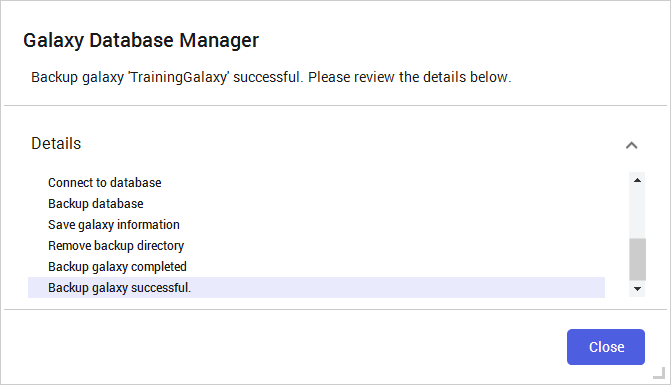
Backup successful — the Galaxy Database Manager displays the backup progress details: Connect to database, Backup database, Save galaxy information, Remove backup directory, Backup galaxy completed, Backup galaxy successful. Click Close when finished (Module 12, page 12-5)
Step 6: When the backup is complete, click Close to dismiss the dialog.
Best Practice: Establish a regular backup schedule — for example, a weekly full backup. Store backup files in a safe, off-system location. Always perform a backup before deploying major configuration changes or software upgrades.
34.14 Creating a New Galaxy from a Backup File
Reference: Module 12, Section 1 (page 12-5)
You can also create a new Galaxy using the .cab file created when a Galaxy backup is performed. This is useful for deploying a Galaxy configuration to a new server or for creating a development copy.
Step 1: Copy the backup .cab file to the following directory: C:\Program Files (x86)\ArchestrA\Framework\Bin\BackupGalaxies
Step 2: In the IDE, open the New Galaxy window. Step 3: Create a new Galaxy and select your backup Galaxy in the Galaxy type field.
Tip: The backup .cab file must be placed in the BackupGalaxies folder before it will appear as an available Galaxy type option in the New Galaxy dialog.
34.15 Restoring a Galaxy
Reference: Module 12, Section 1 (page 12-6)
When you restore a Galaxy from backup, any information saved to the database since the backup was performed is overwritten with the restored information. All changes to the database since the backup are lost. Also, any transactions in progress when the backup was performed are rolled back.
Step 1: Open the OCMC and expand the Galaxy Database Manager. Step 2: Right-click the existing Galaxy and select Restore from the context menu.
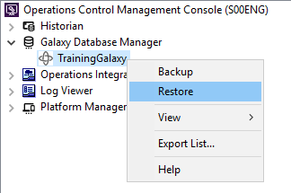
Right-click on TrainingGalaxy under the Galaxy Database Manager — Restore is highlighted in the context menu, ready to initiate the restore operation (Module 12, page 12-6)
Step 3: The Galaxy Database Manager warning dialog appears. Read the warnings carefully:
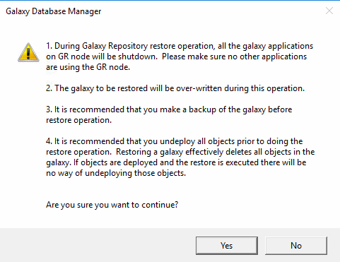
The Restore warning dialog — lists four critical warnings: (1) all galaxy applications on GR node will be shut down, (2) the galaxy will be overwritten, (3) recommended to make a backup first, (4) recommended to undeploy all objects prior to restore (Module 12, page 12-6)
⚠️ Critical Warnings for Restore:
During the restore operation, all galaxy applications on the GR node will be shut down. Make sure no other applications are using the GR node.
The galaxy to be restored will be overwritten during this operation.
It is recommended that you make a backup of the galaxy before restore operation.
It is recommended that you undeploy all objects prior to doing the restore operation. Restoring a galaxy effectively deletes all objects in the galaxy. If objects are deployed and the restore is executed, there will be no way of undeploying those objects.
Step 4: Click Yes to continue restoring, or No to terminate the restore function. Step 5: If you choose Yes, select the name (.cab extension) of the backup file you want to use and click Restore. Step 6: If you have an active client connected to the Galaxy Repository, a message appears. You are required to quit those client programs before restore can continue. Step 7: A confirmation dialog box displays when the restore function is finished.
Tip: Before restoring, ensure that all objects are undeployed and no clients are connected to the Galaxy Repository. This prevents data corruption and ensures a clean restore.
34.16 Backup and Restore Summary
Operation
What Happens
Key Requirements
Backup
Creates a single .cab file containing all files, configuration data, and deployment states
No write operations to the Galaxy Repository during backup
Restore
Overwrites an existing Galaxy with the contents of a backup file
All objects must be undeployed; no clients connected; applications on GR node shut down
Create from Backup
Creates a new Galaxy using a .cab backup file
Copy .cab file to BackupGalaxies folder first
Key Takeaway: The Galaxy Database Manager is your safety net for Galaxy configuration. Regular backups protect against corruption, accidental changes, and hardware failures. Always back up before making major changes, and always undeploy before restoring.
34.17 Knowledge Check
Quiz: Galaxy Backup and Restore
1. What file extension is used for Galaxy backup files?
Click to reveal answer
.cab — the backup creates a single cabinet file containing all Galaxy data.
2. What happens to write operations during a Galaxy backup?
Click to reveal answer
No write operations are allowed to the Galaxy Repository during the backup. If write activity is occurring, you must back up at a later time.
3. Where must a backup .cab file be placed to create a new Galaxy from it?
Click to reveal answer
The file must be copied to C:\Program Files (x86)\ArchestrA\Framework\Bin\BackupGalaxies before it will appear as an available Galaxy type option.
4. What should be done to all objects before restoring a Galaxy?
Click to reveal answer
All objects should be undeployed before restoring. If objects are deployed and the restore is executed, there will be no way of undeploying those objects.
5. What happens to Galaxy applications on the GR node during a restore operation?
Click to reveal answer
All galaxy applications on the GR node will be shut down during the restore operation. No clients can use the Galaxy Repository during restore.
6. What information is lost when restoring a Galaxy from backup?
Click to reveal answer
Any information saved to the database since the backup was performed is overwritten. All changes since the backup are lost, and any in-progress transactions are rolled back.